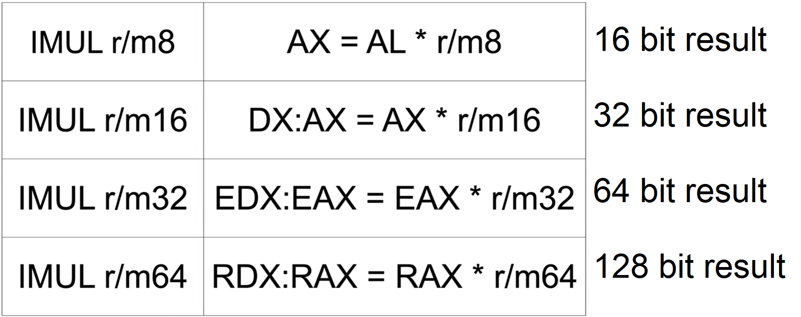

Signed Multiplication (MUL is for unsigned)
because this is signed, when taking x84 it is actually Two's complement of the number
(two's complement => logic NOT +1)
There are three general forms of multiplication, using a one, two and three operands- imul r/mX one operand
- imul reg, r/mX two operands
- imul reg, r/mX, immediate three operands
where X = b for 8 bits- w for 16 bits
- d for 32 bits
- q (or no letter at all) for 64 bits
*VS prefers the use of imul over MUL (even in cases where MUL seems legit)
* it is possiby the only "basic" instruction containing three operands!
Single operand
with single operand, the calculation is done over EAX and the operand. at the end, result is put to EAX
- DX:AX - means, store the result in the concatination of DX and AX - most significant bits in DX and least significant bits in AX, same goes for the others
- example, for the registers

- and the instruction
- imul r12b
- the solution to this one is by imul r/m8 (b=byte)
- AX = AL * r12b
- since 0x84 is negative, we will take his 2's complement - 0x84 NOT + 0x1 = 0x7C
- we only care about the last 8 bits - so we get 7C
- 0x77 * 0x7C = 0x39A4 - we get a positive representation but we need negative: (-) * (+) = (-)
- 0x39A4 NOT + 1 = C65C - since AX is only 16 bits (2 byte, word), result will occupy only AX

Two operands

- there is a risk of truncation - 16*16 is stored in 16 bit register (same for 32 and 64)
- example, for the registers
- and the instruction
- imul r12d, eax
- the solution to this one is by imul r32 r/m32 (d=doubleword=32bits=4bytes)
- r32 = r32 * r/m32
- 0x84 is positve
- 0xA977E177 is negative, we will take his 2's complement
- 0xA977E177 NOT + 1 = 0x56881E89
- 0x56881E89 * 0x84 = 0x9E2FBEA4 - a positive representation
- 0x9E2FC558 NOT + 1 = 61D0415C - turn negative again

Three operands - it has 3 versions - using imm(8,16,32)- first group, imm8 - sign-extended means to extend the 8bit to the register size

- second group, imm16, contains only one operation.
- imul r16, r/m16, imm16 | r16 = r/m16 * imm16
- third group, imm32.

- there is a risk of truncation for all 3 groups
- example, for the registers
- and the instruction
- imul r12, rax, 12341234
- the solution to this one is by imul r64, r/m64, imm32
- r64 = r/m64 * sign extended imm32 (rax * 12341234 --> r12)
- both are positive
- 0x609966C1A977E177 * 0x12341234 = 0xE5A3577504602A2C
- r12 = 0xE5A3577504602A2C